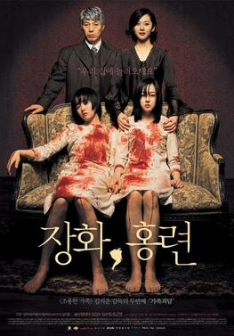

a tale of two sisters (2003)
a psychological horror film written and directed by Kim Jee Woon,
inspired by a tragic Korean folktale about two sisters and a stepmother.
this website is a reinterpretation of the film and its setting, the house.